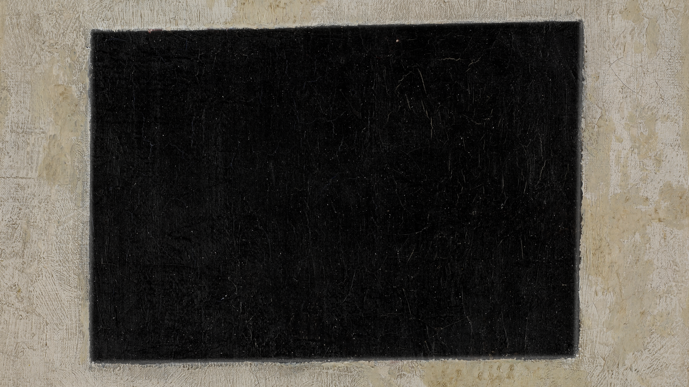
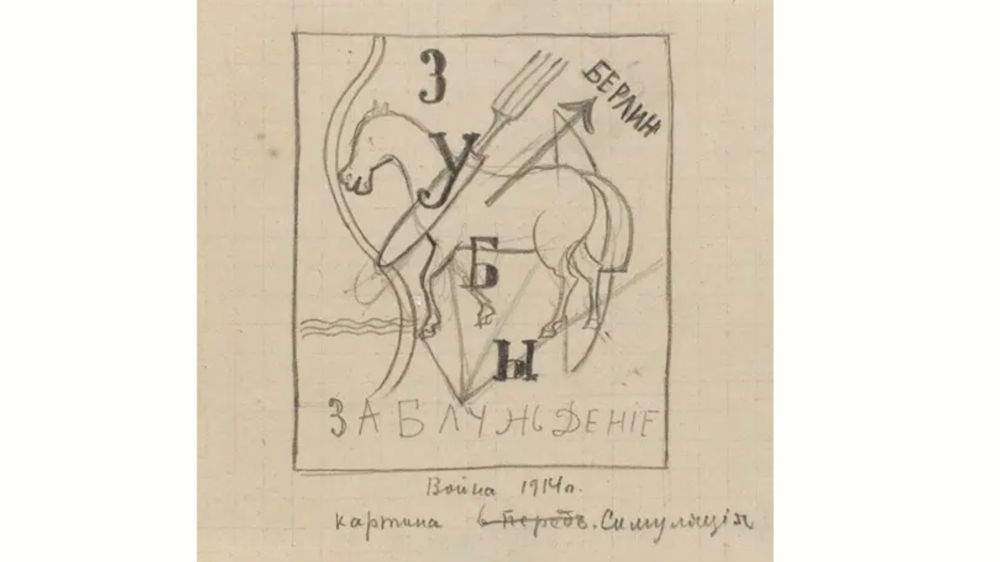
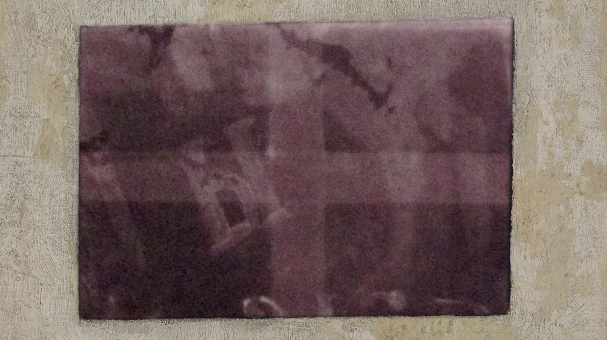

BRAVO!
When the painting Black Quadrilateral was analyzed by art conservation specialist Maria Kokkori, the x-ray revealed traces of an earlier painting below it.
 It was part of a lost painting, one of the sketches for which is known with the title War (1914) and depicts a horse with the words “Berlin”, “War”, “Teeth”, “Fallacy”, “Painting” and “Simulation" (Khardzhiev collection, Stedelijk Museum, Amsterdam).
According to Kokkori, there was almost no dust to be found between the two colored layers, which means that Malevich painted this certain suprematist work right after he had completed the earlier painting, making the Black Quadrilateral one of the earliest works of suprematist painting and leading us safely to date it from 1915.